7
896 fiches en français pour le niveau 7, prêtes à imprimer et avec corrigé.
896 ressources
Thème

Hermès – Compréhension de lecture : texte à trous, écoute et mots mêlés
Hermannsdenkmal – Compréhension de lecture : texte à trous, écoute et mots mêlés
Herbe aromatique – Texte à trous, compréhension orale et mots mêlés
Herbe – Compréhension de lecture : texte à trous, écoute et mots mêlés
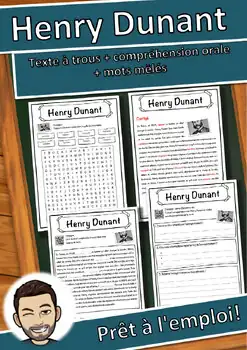
Henry Dunant – Compréhension de lecture : texte à trous, écoute et mots mêlés
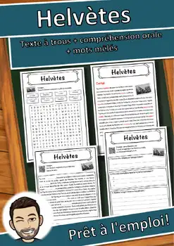
Helvètes – Compréhension de lecture : texte à trous, écoute et mots mêlés
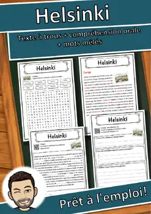
Helsinki – Compréhension de lecture : texte à trous, écoute et mots mêlés

Heligoland – Compréhension de lecture : texte à trous, écoute et mots mêlés
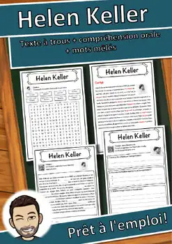
Helen Keller – Compréhension de lecture : texte à trous, écoute et mots mêlés
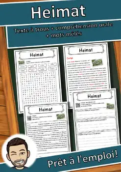
Heimat – Compréhension de lecture : texte à trous, écoute et mots mêlés
Haute-Autriche – Compréhension de lecture : texte à trous, écoute et mots mêlés

Fort-de-France – Fiche : texte à trous, compréhension orale et mots mêlés
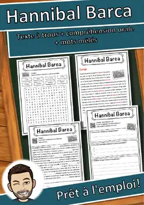
Hannibal Barca – Compréhension de lecture : texte à trous, écoute et mots mêlés

Ajaccio – Fiche de géographie : texte à trous, compréhension orale et mots mêlés
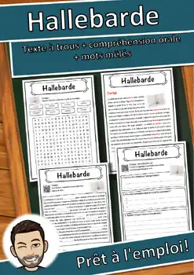
Hallebarde – Compréhension de lecture : texte à trous, écoute et mots mêlés
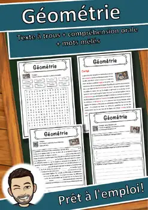
Géométrie – Compréhension de lecture : texte à trous, écoute et mots mêlés
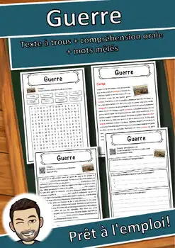
Guerre – Compréhension de lecture : texte à trous, écoute et mots mêlés
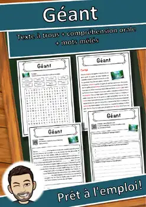
Géant – Compréhension de lecture : texte à trous, écoute et mots mêlés
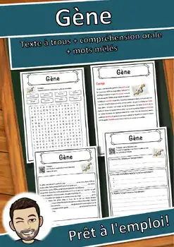
Gène – Compréhension de lecture : texte à trous, écoute et mots mêlés
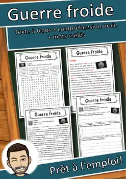
Guerre froide – Compréhension de lecture : texte à trous, écoute et mots mêlés
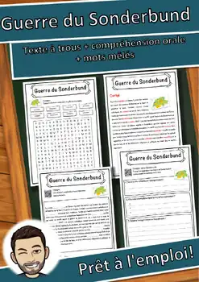
Guerre du Sonderbund – Texte à trous, compréhension orale et mots mêlés
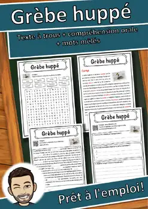
Grèbe huppé – Compréhension de lecture : texte à trous, écoute et mots mêlés
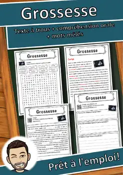
Grossesse – Compréhension de lecture : texte à trous, écoute et mots mêlés
Gravitation – Compréhension de lecture : texte à trous, écoute et mots mêlés
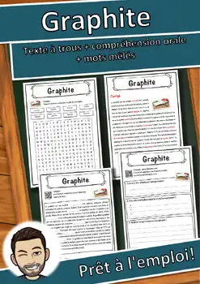
Graphite – Compréhension de lecture : texte à trous, écoute et mots mêlés
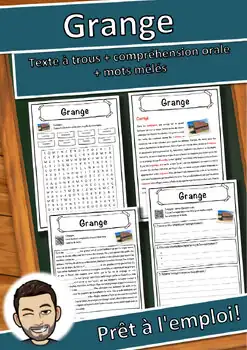
Grange – Compréhension de lecture : texte à trous, écoute et mots mêlés
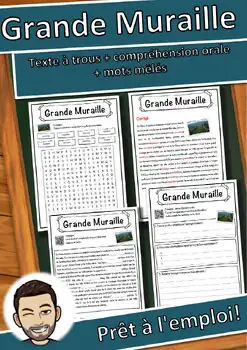
Grande Muraille – Compréhension de lecture : texte à trous, écoute et mots mêlés
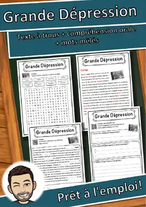
Grande Dépression – Texte à trous, compréhension orale et mots mêlés
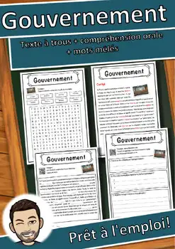
Gouvernement – Compréhension de lecture : texte à trous, écoute et mots mêlés
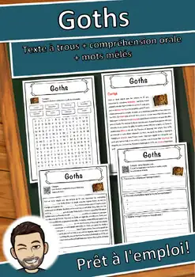
Goths – Compréhension de lecture : texte à trous, écoute et mots mêlés
Gomphocerinae – Compréhension de lecture : texte à trous, écoute et mots mêlés
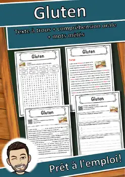
Gluten – Compréhension de lecture : texte à trous, écoute et mots mêlés
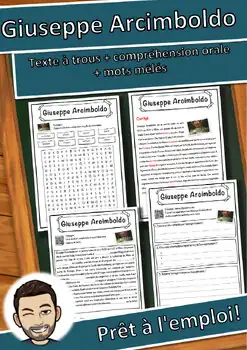
Giuseppe Arcimboldo – Texte à trous, compréhension orale et mots mêlés
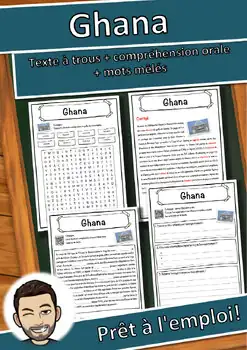
Ghana – Compréhension de lecture : texte à trous, écoute et mots mêlés
Genre artistique – Texte à trous, compréhension orale et mots mêlés
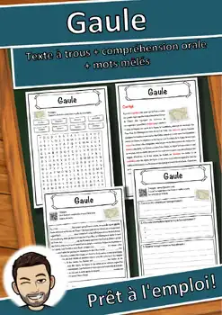
Gaule – Compréhension de lecture : texte à trous, écoute et mots mêlés

Gallium – Compréhension de lecture : texte à trous, écoute et mots mêlés

Fête de la Réformation – Texte à trous, compréhension orale et mots mêlés

Futur – Compréhension de lecture : texte à trous, écoute et mots mêlés

Fusée – Compréhension de lecture : texte à trous, écoute et mots mêlés

Frontière – Compréhension de lecture : texte à trous, écoute et mots mêlés

Fracturation hydraulique – Texte à trous, compréhension orale et mots mêlés

Empire espagnol – Compréhension de lecture : texte à trous, écoute et mots mêlés

Champigny-sur-Marne – Fiche : texte à trous, compréhension orale et mots mêlés

Francium – Compréhension de lecture : texte à trous, écoute et mots mêlés

Forêt humide – Compréhension de lecture : texte à trous, écoute et mots mêlés

Forêt – Compréhension de lecture : texte à trous, écoute et mots mêlés

Forestier – Compréhension de lecture : texte à trous, écoute et mots mêlés
Aucune ressource trouvée – essaie un autre mot ou un autre filtre.